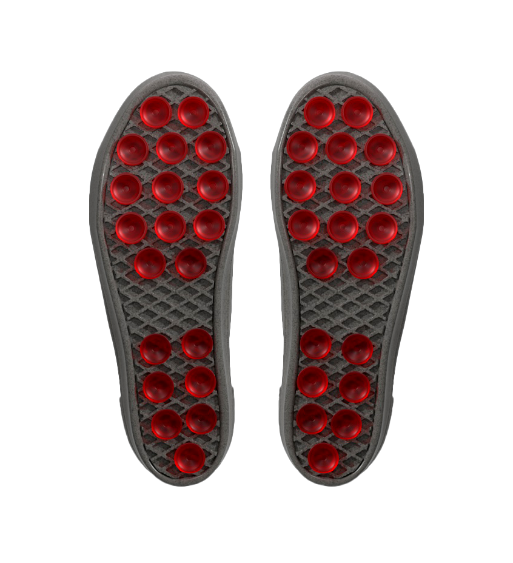

밀려나는 발끝, 시선의 압박, 출퇴근길 지하철에서 살아남기 위해선, 강력한 무기가 필요합니다. 지옥철 생존 키트는 시도하기 쉬운 것부터, 용기 있는 선택까지. 당신의 수치심 단계에 맞춰 구매하실 수 있습니다. 처음엔 살짝, 나중엔 대담하게. 당신만의 방식으로, 지하철에서의 삶을 새롭게 정의하세요.
특수 제작된 흡착 밑창이 지하철의 갑작스러운 제동에도, 밀려오는 인파 속에서도 당신을 제자리에 단단히 고정시켜줍니다. 아무도 모르게, 그러나 누구보다 확실하게 지옥철에서 살아남을 수 있게 해주는 제품입니다.
기기를 착용하는 순간 당신의 눈 앞에 펼쳐지는건 꽉 막힌 지하철이 아닌, 한적한 숲, 고요한 바다입니다.초경량 + 24시간 지속 배터리로 완전하게 현실을 회피하게 해줍니다.